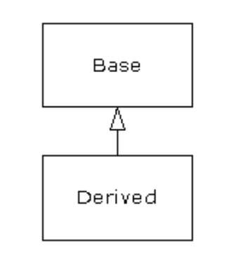
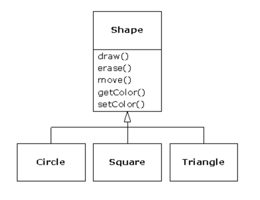
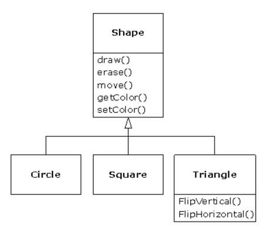
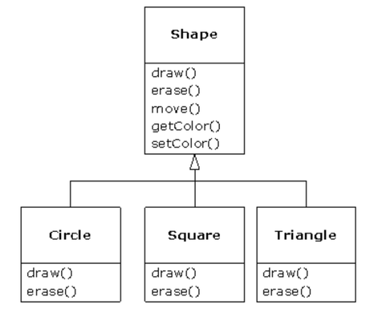

Inheritance
By itself, the idea of an object is a convenient tool. It allows you to package data and functionality together by concept, so you can represent an appropriate problem-space idea rather than being forced to use the idioms of the underlying machine. These concepts are expressed as fundamental units in the programming language by using the class keyword.
It seems a pity, however, to go to all the trouble to create a class and then be forced to create a brand new one that might have similar functionality. It’s nicer if we can take the existing class, clone it, and then make additions and modifications to the clone. This is effectively what you get with inheritance, with the exception that if the original class (called the base class or superclass or parent class) is changed, the modified “clone” (called the derived class or inherited class or subclass or child class) also reflects those changes.

(The arrow in this UML diagram points from the derived class to the base class. As you will see, there is commonly more than one derived class.)
A type does more than describe the constraints on a set of objects; it also has a relationship with other types. Two types can have characteristics and behaviors in common, but one type may contain more characteristics than another and may also handle more messages (or handle them differently). Inheritance expresses this similarity between types by using the concept of base types and derived types. A base type contains all of the characteristics and behaviors that are shared among the types derived from it. You create a base type to represent the core of your ideas about some objects in your system. From the base type, you derive other types to express the different ways that this core can be realized.
For example, a trash-recycling machine sorts pieces of trash. The base type is “trash”, and each piece of trash has a weight, a value, and so on, and can be shredded, melted, or decomposed. From this, more specific types of trash are derived that may have additional characteristics (a bottle has a color) or behaviors (an aluminum can may be crushed, a steel can is magnetic). In addition, some behaviors may be different (the value of paper depends on its type and condition). Using inheritance, you can build a type hierarchy that expresses the problem you’re trying to solve in terms of its types.
A second example is the classic “shape” example, perhaps used in a computer-aided design system or game simulation. The base type is “shape,” and each shape has a size, a color, a position, and so on. Each shape can be drawn, erased, moved, colored, etc. From this, specific types of shapes are derived (inherited)—circle, square, triangle, and so on—each of which may have additional characteristics and behaviors. Certain shapes can be flipped, for example. Some behaviors may be different, such as when you want to calculate the area of a shape. The type hierarchy embodies both the similarities and differences between the shapes.

Casting the solution in the same terms as the problem is very useful because you don’t need a lot of intermediate models to get from a description of the problem to a description of the solution. With objects, the type hierarchy is the primary model, so you go directly from the description of the system in the real world to the description of the system in code. Indeed, one of the difficulties people have with object-oriented design is that it’s too simple to get from the beginning to the end. A mind trained to look for complex solutions can initially be stumped by this simplicity.
When you inherit from an existing type, you create a new type. This new type contains not only all the members of the existing type (although the private ones are hidden away and inaccessible), but more importantly it duplicates the interface of the base class. That is, all the messages you can send to objects of the base class you can also send to objects of the derived class. Since we know the type of a class by the messages we can send to it, this means that the derived class is the same type as the base class. In the previous example, “A circle is a shape.” This type equivalence via inheritance is one of the fundamental gateways in understanding the meaning of object-oriented programming.
Since both the base class and derived class have the same fundamental interface, there must be some implementation to go along with that interface. That is, there must be some code to execute when an object receives a particular message. If you simply inherit a class and don’t do anything else, the methods from the base-class interface come right along into the derived class. That means objects of the derived class have not only the same type, they also have the same behavior, which isn’t particularly interesting.
You have two ways to differentiate your new derived class from the original base class. The first is quite straightforward: You simply add brand new methods to the derived class. These new methods are not part of the base-class interface. This means that the base class simply didn’t do as much as you wanted it to, so you added more methods. This simple and primitive use for inheritance is, at times, the perfect solution to your problem. However, you should look closely for the possibility that your base class might also need these additional methods. This process of discovery and iteration of your design happens regularly in object-oriented programming.

do anything else, the methods from the base-class interface come right along into the derived class. That means objects of the derived class have not only the same type, they also have the same behavior, which isn’t particularly interesting. You have two ways to differentiate your new derived class from the original base class. The first is quite straightforward: You simply add brand new methods to the derived class. These new methods are not part of the base-class interface. This means that the base class simply didn’t do as much as you wanted it to, so you added more methods. This simple and primitive use for inheritance is, at times, the perfect solution to your problem. However, you should look closely for the possibility that your base class might also need these additional methods. This process of discovery and iteration of your design happens regularly in object-oriented programming. Although inheritance may sometimes imply (especially in Java, where the keyword for inheritance is extends) that you are going to add new methods to the interface, that’s not necessarily true. The second and more important way to differentiate your new class is to change the behavior of an existing base-class method. This is referred to as overriding that method.

To override a method, you simply create a new definition for the method in the derived class. You’re saying, “I’m using the same interface method here, but I want it to do something different for my new type.”